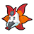

Access to:
Exit on 1F: Desert Resort
Only the first two floors are accessible before N awakens a dragon at Dragonspiral Tower. Part of the lowest floor is only accessible after defeating the Elite Four.
| Pokémon | Level | Notes | |
|---|---|---|---|
|
 |
Volcarona | 70 | In its room on the lowest floor. If defeated or run from, it will reappear after defeating the Elite Four. It holds SilverPowder. |
| Item | Location | Notes |
|---|---|---|
| Cover Fossil | On 1F, obtained from the Backpacker | Mutually exclusive with the Plume Fossil. |
| Plume Fossil | On 1F, obtained from the backpacker | Mutually exclusive with the Cover Fossil. |
| TM26 Earthquake | On 1F, in the northwestern tower | |
| Revive | On B1F | |
| Elixir | On B1F, in the western sand pile | Hidden. |
| Max Potion | On B2F, in the southeastern corner | |
| TM30 Shadow Ball | On B2F, southeast of the female Team Plasma Grunt | |
| Max Revive | On B3F, in the alcove south of the central quicksand | |
| PP Max | On B3F, in the northwest tower, south of the stairs | Hidden. |
| PP Up | On B3F, in the southwestern corner | |
| Super Potion | On B4F, in the southeastern sand pile | Hidden. |
| Sun Stone | On B4F, east of the northern sand pile | |
| TM04 Calm Mind | On the lowest floor, obtained from Ryoku outside Volcarona's room |
| Trainer | Party | Notes |
|---|---|---|
| Psychic Perry | Sigilyph lv.24 | On 1F. |
| Psychic Dua | Woobat lv.23 Munna lv.23 |
On 1F. |
| Team Plasma Grunt | Watchog lv.34 Krokorok lv.34 Krokorok lv.34 |
On B1F. |
| Team Plasma Grunt | Scraggy lv.35 Watchog lv.35 |
On B2F. |
| Team Plasma Grunt | Garbodor lv.36 | On B2F. |
| Team Plasma Grunt | Krokorok lv.36 | On B3F. |
| Team Plasma Grunt | Liepard lv.34 Trubbish lv.34 Trubbish lv.34 |
On B3F. |
| Team Plasma Grunt | Watchog lv.35 Scraggy lv.35 |
On B4F. |
| Team Plasma Grunt | Trubbish lv.35 Liepard lv.35 |
On B4F. |
| Team Plasma Grunt | Krookodile lv.64 | On the lowest floor. |